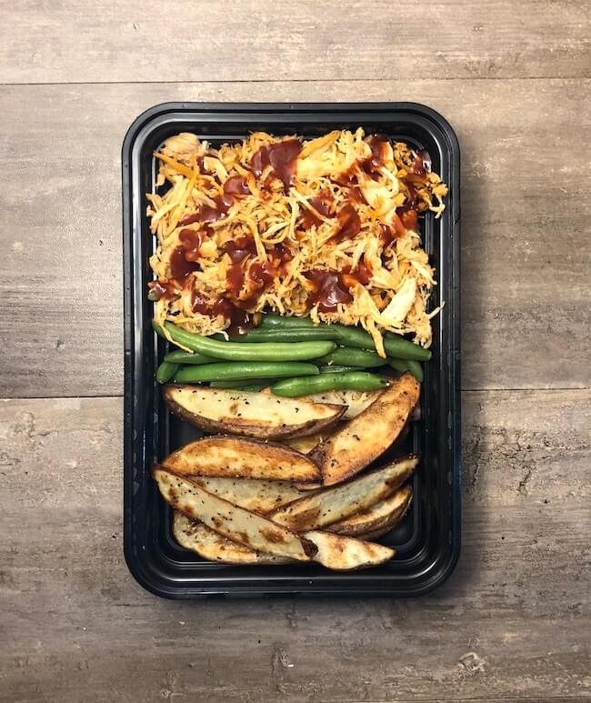

Shredded BBQ chicken

Description:
A simple recipe comprised of only 7 ingredients,
this meal is perfect for days you don't want to spend a lot of time in the kitchen as you will use the crockpot to cook the chicken and can buy frozen green beans to save time.
Ingredients:
- 2 lbs (908 g) boneless skinless chicken breast
- ¾ cup (180 ml) vinegar based BBQ sauce I
- 5 medium (750 g) russet potatoes
- 2 tbsp (30 ml) olive oil
- 20 oz (567 g) frozen green beans
- Salt and pepper
Instructions:
- Cook the chicken with 1 cup of water or broth in a crockpot on low for 6 hours or high for 2-3.
- Once cooked remove from liquid and shred. Mix in the BBQ sauce.
- Preheat oven to 425°F
- Cut potatoes into wedges and toss in olive oil. Season with salt and pepper.
- Bake for 10 minutes and then flip. Cook an additional 10 minutes or until desired crispiness is achieved
- Cook green beans as instructed on package. Season with salt and pepper.
- This recipe makes 5 servings. Divide evenly 5 ways.
Nutrition:
Calories: 503kcal | Carbohydrates: 61g | Protein: 41g | Fat: 11g